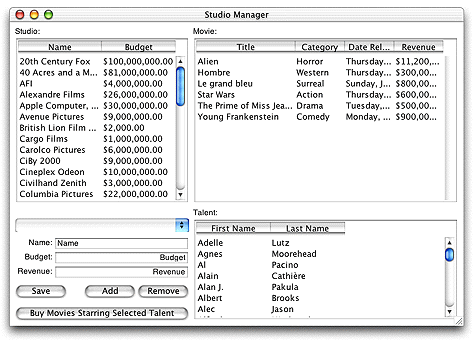

| PATH |

The Java Client approach allows you to replace the HTML user interface of a WebObjects application with a much more interactive and flexible one written in Java. In the sample Java Client application shown in Figure 6-1, the user interface is like the interfaces you see in traditional desktop applications.
Figure 6-1 A sample Java Client application

© 2001 Apple Computer, Inc.